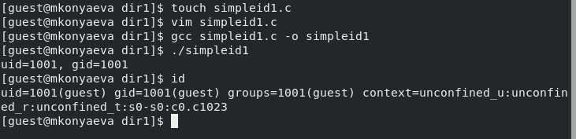

Дискреционное разграничение доступа — управление доступом субъектов к
объектам на основе списков управления доступом или матрицы доступа.
Также используются названия дискреционное управление доступом,
контролируемое управление доступом и разграничительное управление
доступом. [2]
SetUID
setuid и setgid (сокращения от англ. set user ID upon execution —
«установка ID пользователя во время выполнения» и англ. set group ID
upon execution — «установка ID группы во время выполнения») являются
флагами прав доступа в Unix, которые разрешают пользователям запускать
исполняемые файлы с правами владельца или группы исполняемого файла.
[3]
Sticky
Sticky bit используется в основном для каталогов, чтобы защитить в
них файлы. Из такого каталога пользователь может удалить только те
файлы, владельцем которых он является. Примером может служить каталог
/tmp, в который запись открыта для всех пользователей, но нежелательно
удаление чужих файлов. [4]
Цель работы
Изучение механизмов изменения идентификаторов, применения SetUID- и
Sticky-битов. Получение практических навыков работы в консоли с
дополнительными атрибутами. Рассмотрение работы механизма смены
идентификатора процессов пользователей, а также влияние бита Sticky на
запись и удаление файлов.
Выполнение
лабораторной работы. Подготовка лабораторного стенда
(рис. 1. Установка gss)
Выполнение
лабораторной работы.Создание программы
Зашли в систему от имени пользователя guest.
Создали файл simpleid.c, записали в него программу, скоплировали
и запустили его. Программа дала те же результаты, что и консольная
команда id. (@fig:001, @fig:002)

Работа в консоли с файлом
simpleid.c
Содержимое файла simpleid.c
Содержимое файла simpleid.c
Работа в консоли с файлом
simpleid2.c
Создали файл simpleid2.c, записали в него программу, скоплировали и
запустили его. (@fig:003, @fig:004)
Работа в консоли с файлом
simpleid2.c
Содержимое файла simpleid2.c
Содержимое файла simpleid2.c
Изменение прав файла
simpleid2
Изменили права файла simpleid2 от имени суперпользователя. (@fig:005)
Изменение прав файла
simpleid2
Проверка
прав файла simpleid2, его запуск и команда id
Выполнили проверку установки правил. Запустили simpleid2 и id.
Получили одинаковы результаты с id=0. (@fig:006)
Проверка прав файла simpleid2, его запуск
и команда id
Выполнения файла с
SetGID-битом
Повторили п.5 для SetGID-бита. (@fig:007)
Выполнения файла с
SetGID-битом
Содержимое файла readfile.c
Создали программу readfile.c и откомпелировали ее. (@fig:008, @fig:009)
Содержимое файла readfile.c
Создание и компелирование
readfile.c
Создание и компелирование
readfile.c
Изменение прав файла
readfile.c
Изменили права так, чтобы только суперпользователь (root) мог
прочитать readfile.c, a guest не мог. (@fig:010)
Изменение прав файла
readfile.c
Чтение readfile.c
пользователем guest
Проверили, что guest не модет прочитать файл. (@fig:011)
Чтение readfile.c пользователем
guest
Смена прав у readfile
Сменили у программы readfile владельца и установили SetU’D-бит.
(@fig:012)
Смена прав у readfile
Чтение readfile.c через
readfile
Считали программой readfile readfile.c и /etc/shadow. (@fig:013, @fig:014)
Чтение readfile.c через
readfile
Чтение /etc/shadow через
readfile
Чтение /etc/shadow через
readfile
Исследование
Sticky-бита. Создание и изменение прав файла /tmp/file01.txt
Проверили установлени ли на директории tmp атрибут Sticky. От имени
пользователя guest создали file01.txt в директории /tmp со словом test.
Просмотрели атрибуты у файла и разрешили чтение и запись для категории
пользователей «все остальные». (@fig:015)
Создание и изменение прав файла
/tmp/file01.txt
Взаймдействие
с file01.txt пользователем guest2 c Sticky-bit
От имени пользователя guest2 попробовали прочитать, дозаписать,
переписать и удалить файл file01.txt. (@fig:016)
Взаймдействие с file01.txt пользователем
guest2 c Sticky-bit
Взаймдействие
с file01.txt пользователем guest2 без Sticky-bit
Суперпользователем сняли Sticky-bit с каталога tmp. Повторили
действия с файлом из п.2. (@fig:017)
В ходе выполнения лабораторной работы были опробованы действия на
практике SetUID- и Sticky-битов и рассмотрен механизм смены
идентификатора процессов пользователей.
Список литературы.
Библиография
[1] Методические материалы курса.
[2] Wikipedia: Избирательное управление доступом. (URL:
https://ru.wikipedia.org/wiki/%D0%98%D0%B7%D0%B1%D0%B8%D1%80%D0%B0%D1%82%D0%B5%D0%BB%D1%8C%D0%BD%D0%BE%D0%B5_%D1%83%D0%BF%D1%80%D0%B0%D0%B2%D0%BB%D0%B5%D0%BD%D0%B8%D0%B5_%D0%B4%D0%BE%D1%81%D1%82%D1%83%D0%BF%D0%BE%D0%BC)